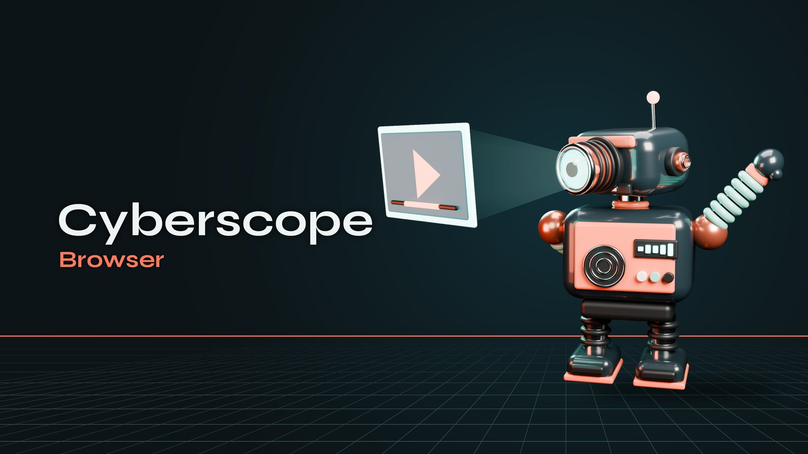

Watch the web in VR
Browse the web like normal on your Meta Quest. When a video starts, Cyberscope opens it in a real VR player: on a big flat screen, in 3D, or all around you in 180 and 360.
Made for watchingFlat, 3D, 180, 360 and fisheye, passthrough, subtitles, picture and sound controls, and your own network shares.
Private by designNo account, no ads, no tracking. A sealed private window that's wiped when you close it.
A real browserTabs, bookmarks, history, find in page, zoom, an ad and tracker blocker, and your choice of search engine.
Support
Questions, bugs or ideas: cyberscope.support@gmail.com